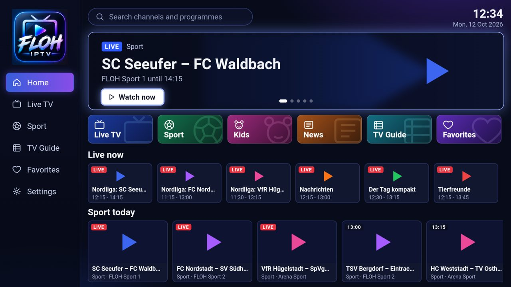
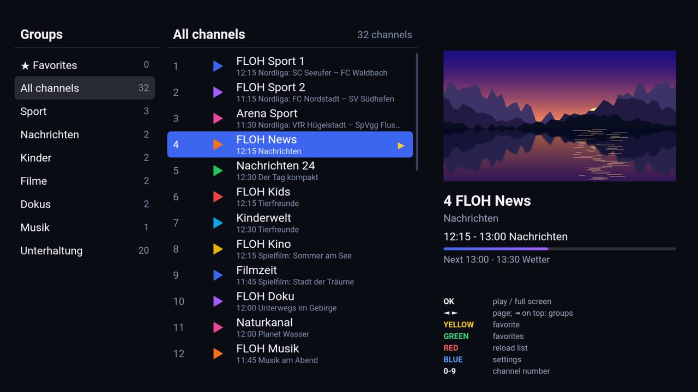
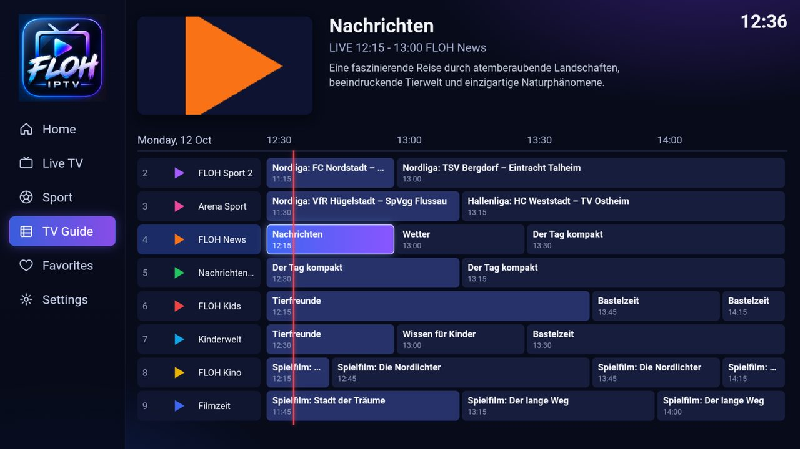
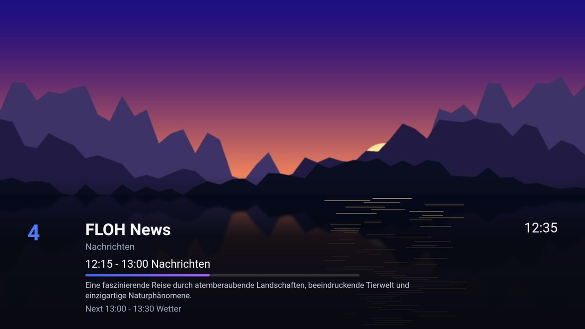

What FLOH IPTV looks like




The pictures show an invented demo line-up on a Fire TV Stick 4K.
What FLOH IPTV does
Fast with huge lists
Playlist and TV guide are ready in seconds and kept on the device. The channel list scrolls page by page.
Home screen with live sport
The matches running on your own sport channels, plus tiles for Live TV, Kids, News and Favorites.
TV guide (EPG)
As a grid, in the channel list and in the info bar. Search for channels and programmes.
Does not get stuck
If a channel freezes, the app reopens it by itself, then moves to another version or the next channel.
The full picture
The "Smart" picture format widens SD channels to the full width instead of leaving them narrow.
No strings attached
Free, no ads, no account. Your data stays on your device.
Installed in a few minutes
Fire TV & Android TV
- Install the Downloader app.
- Under Settings → My Fire TV → Developer options, allow "Apps from unknown sources" for Downloader.
- Enter in Downloader:
kingflooow.github.io/floh-iptv/apk - Install, open, enter your playlist link.
Samsung Smart TV (2017 and later)
- On the TV open Apps, press 1 2 3 4 5 and switch on developer mode.
- Start the free Apps2Samsung on a PC, Mac or Android phone.
- Choose the file FLOH-IPTV.wgt and install it.
- Open it, enter your playlist link.
Windows 10 & 11
- Download FLOH-IPTV-windows.zip.
- Right-click → Extract All…
- Start FLOH IPTV.exe. If Windows warns: More info → Run anyway.
- Paste your playlist link (Ctrl + V), Enter. Use mouse or keyboard.
Try it without a list of your own: enter the demo playlist https://kingflooow.github.io/floh-iptv/demo.m3u in the app. Eight invented channels with demo pictures and a guide of their own.
Questions
Does FLOH IPTV cost anything?
No. FLOH IPTV is free, without ads and without an account.
Does it come with channels?
No. FLOH IPTV is only a player, like a video player without films. You enter the M3U playlist of your own provider and are responsible for what you play.
Which devices does the app run on?
Samsung Smart TVs from 2017 (Tizen), all Fire TV Sticks (including 4K and 4K Max) and Fire TV Cubes, Android TV and Google TV devices, and Windows PCs with Windows 10 or 11.
Is there FLOH IPTV for Windows?
Yes. Unzip FLOH-IPTV-windows.zip and start FLOH IPTV.exe; it works with mouse and keyboard, F11 switches to full screen. Guide
Why does my IPTV playlist load so slowly in other apps?
Usually it is not the channel list but the provider's huge TV guide (EPG), often hundreds of megabytes, which many players read in full. FLOH IPTV reads only the channels and hours you need, in the background, and keeps everything on the device. The next start shows the channels at once.
Does the app support a TV guide (EPG)?
Yes. The XMLTV guide is taken from the playlist or entered as a link of its own in the settings.
What happens when a channel freezes?
The app notices when the picture stands still or a channel does not start, reopens it by itself and then moves to another version (SD instead of HD, for example) or the next channel.
What about privacy?
The app collects no data and sends nothing to us. Settings and favorites stay on your device. Privacy policy
Tell others
Like FLOH IPTV? Show the QR code or send the link: kingflooow.github.io/floh-iptv